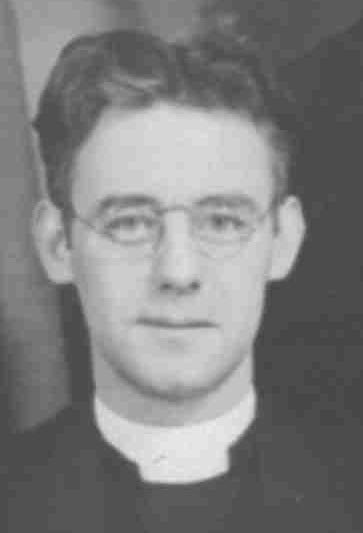
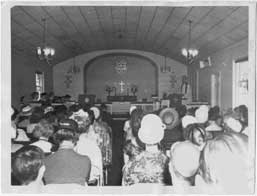

|
History of Holy Trinity Evangelical Lutheran Church Red Bank, New Jersey Founding the New Church As early as 1909, efforts were made to organize the Lutherans in Red Bank and the surrounding area. At that time, Mr. and Mrs. Walter Mahns of Eatontown started a school for the catechetical instruction of children in a building known as "Mrs. Hazard's School". The children were under the instruction of visiting pastors. This effort was curtailed by the move of the children to Asbury Park for their religious schooling. In the summer of 1927, however, Mrs. Thomas Mead, having regularly listened to the sermons delivered over the radio by Pastor S.H. Rudisill of Elizabeth, New Jersey, wrote to him requesting his assistance in forming a Lutheran congregation in Red Bank. This request was referred to Dr. Samuel Trexler, the President of the New York and New Jersey Synod of the U.L.C.A., who assigned Missionary Supt. Pastor James Berg to visit Red Bank. Pastor Berg gathered the names of a number of interested people, rented the hall over the Clayton-Magee Store at 19 Broad Street, advertised the first service for September 11, 1927, and conducted that service, which was attended by 34 persons. The people who attended resolved to organize and elect a council and to see that the services were continued. The first officers of that budding congregation were: H.D. Franz, President; Walter Mahns, Treasurer; and Harold Hendrickson, Secretary. The Congregation was formally organized on January 18, 1928, with the adoption of the model constitution of the U.L.C.A. In March a call was extended to Paul John Tritschler, a student of the Lutheran Seminary in Philadelphia, to become the first pastor of the new congregation. Upon his ordination, he accepted the call on June 7, and on Sunday, July 8, 1928, he was installed as pastor of Holy Trinity Evangelical Lutheran Church of Red Bank by Dr. Trexler. All persons who were qualified and wished to be considered members, were publicly received as charter members on Sunday, July 15, 1928. A Luther League for the youth, a Ladies Aid Society, and a Sunday School were organized in 1928. Sunday School services were started in October 1928. Acquiring Land for a Building From the time of the first worship service, the congregation met in rented space on the second floor of Clayton-Magee's store on Broad Street in Red Bank. This space was rented to several groups. This caused the church worship services to be held in an atmosphere of stale cigar smoke with spittoons arrayed along the walls. One Good Friday evening when Holy Trinity thought the hall was theirs, another organization had the same thoughts. Even though the Good Friday service won the hall, serious thoughts about more permanent quarters were no doubt instilled by such incidents. The national economy had an important effect on the congregation. In December 1930 the Church Council was given authority by a special congregational meeting to purchase two lots as a location for a future Church building. Those lots, purchased from Mr. and Mrs. Jacob Rue for $7,000, are the location of our present Church. The Church received a $500 interest free loan for three years. Mr. and Mrs. Rue agreed to take a $5,000 mortgage at 6%. The balance of $1,500 was paid in cash. We may wonder at the courage displayed by our early members to undertake such a large expense when they had difficulty paying the rent of $50 a year on the hall over the Clayton-Magee store. That was at the beginning of the great economic depression of the 1930's! How keen is our hindsight. Growing and Facing Challenges: The 1930s In July 1931, after several requests, two mission Churches were organized: Gethsemane in Keyport and Reformation in Long Branch. Pastor Tritschler served these two congregations as supply pastor, as well as Holy Trinity until June 1932. Since Pastor Tritschler had no car, he had to depend on members of the congregation to take him in their cars on pastoral calls. He also used the buses and did much walking, even up to Highlands! For many years he was the only Lutheran minister in the Monmouth County shore area. He, together with the founding members of Holy Trinity, believed in the outreach of the Christian Church and was instrumental in bringing the faith to nearby communities. We believe that the Holy Spirit moves within those who open their hearts and minds to His influence. In the fall of 1931 a Women's Missionary Society was organized. Early in February 1935, Pastor Tritschler resigned his pastorate at Holy Trinity to accept a call to Holy Nativity Lutheran Church in Endicott, New York. At that time church council members were: Theodore Bixler, Gustave Hahne, Harold Hendrickson, Douglas Jerolamon, Erich Kaeks, Friedrich Kienert, Christian Olsen, George Ploger, and Albert Wymbs. In May 1935, Pastor Walter Cowen was installed at Holy Trinity. He also served Reformation in Long Branch, as did his predecessor. The above council, the new pastor, and the congregation were facing personal and corporate financial difficulties; the congregational spirit was depressed along with the national economy. From 1932 to 1936, due to the economic depression and internal differences, no payments were made on the Church lot. The year 1936 brought with it new spirit and new resources. In March, a Loyalty Service was held at which time $1,700 was pledged to relieve the debt on the lots that were purchased in 1931. By November 1937, the fund reached $2,000. Armed with this and a loan of $1,500 from the Rural Church Fund, Pastor Cowen convinced the mortgage holders that the debt be reduced and interest should be forgiven. The mortgage was reduced from $4,000 to $3,500, and the interest arrears of $240 was canceled, therefore allowing a settlement in full for the property. By November 1937, the building lots belonged to Holy Trinity. On January 16, 1938, a mortgage burning ceremony was held, and in the subsequent months plans were developed, mainly with the leadership of Mr. George Ploger, for a church building. A building appeal was held and signed pledges of $4,000 were secured. An architect was hired, bids were let, a loan from the Board of Missions for $4,000 was received and $2,100 in bonds was subscribed. The H.A. Hendrickson firm was awarded the contract to build the Church at a figure of $10,274, nave unfinished. In January 1938, the annual congregational meeting was held in conjunction with the "First Loyalty Dinner of the Second Campaign." At the end of that month, the Tenth Anniversary Service was conducted by Pastor Cowen. Rev. B. Burgess, president of the United Synod of New York and New Jersey, preached the sermon. After a week of incessant rain, the prayers of the congregation were answered and the skies cleared to permit the service of ground breaking on July 24, 1938. Mayor Charles English of Red Bank congratulated the congregation on its success, and said its contribution to the community would more than pay the tax exemptions. The cornerstone contains a sealed copper box with a list of the members of the congregation, names of the officers of the societies, a list of the contributors to the building fund, a copy of the Bible, Luther's catechism, and newspaper accounts of the laying of the cornerstone, which was given by Mrs. William Holtz. This took place before a crowd of 300 persons on September 25, 1938. The first service was held in the Church basement on Christmas Eve with 135 people attending. The service was very cold, as there was no heat in the building. The builders had reluctantly removed their tools and building supplies so chairs could be brought in. Candlelight was used for lighting and the open windows were covered with netting. The spirit of the Lord was present, however, and the people who attended were greatly blessed! On the Building Committee were: R.T. Dixler, Chairman; Erich Kaeks; George Polger; Clarence Maxson; Fred Pagenkopf (Page); Harold Hendrickson; Henry Franz; Mrs. Fred Wilman; Mrs. H.A. Hendrickson; Mrs. Thomas Mead; Mrs. Albert Lindenstruth; Miss Mary LeValley; Mrs. Martin Dougherty; and Pastor Walter Cowen. The Church was officially dedicated on February 5, 1939, followed by a week of celebration in which all organizations of the Church participated. In a letter written on the occasion of our 25th anniversary, Rev. Cowen wrote: "It seems like only yesterday when we looked at a weed-filled lot with a $4,500 mortgage on it, and piles of unpaid bills. When people used to ask, "How did they even manage to get a Lutheran Church built in Red Bank?" I used to reply, "Well, we had an empty lot, heavily mortgaged, with a weather beaten sign saying, 'The Lutheran Church will build here.' The Lord sent a hurricane, and blew down the sign - we couldn't afford to buy a new sign, so we had to build the Church. But in truth, it was the loyalty, sacrifices and faith of the people, starting from less than zero you might say, that erected the building." Ministering During War & Acquiring a Parsonage: The 1940s The attention of the congregation was concentrated on the new building, and its furnishings, during 1938 - 40. During 1940, moreover, an Inner Mission Society was established with Winona Darrah as its president. Its purpose was to aid the needy of the church, study social problems, and collect and make items for institutions. At the outset of World War II, in 1941, Pastor Cowen assumed charge of part-time pastoral service for the National Lutheran Council in the Red Bank area. This drew servicemen to Holy Trinity to be entertained by the members of the church at meals, as well as extending Christian fellowship in the Church Services. This was an important assistance in those dark days. Loyalty dinners, held monthly, featuring special programs by representatives of Lutheran Schools, Colleges, Boards and Institutions, brought the congregation through the dark days of the war. Pastor Cowen resigned his pastorate at Holy Trinity to accept a call to Incarnation Lutheran Church of Jamaica, Long Island, New York, in December 1943. At that time the church council members were: Jacob Bloom, August Budelman, Henry D. Franz, George Hansen, Christian Hasselhoff, Fred Kienert, and John Schroeder. The Rev. Charles E. Ritter assumed the duties of Pastor of Holy Trinity in June 1944. Pastor Ritter joined the ongoing work at the Church early in his career and remained only until October 1945. He left to serve St. Paul's Evangelical Lutheran Church in White Haven, Pennsylvania, a congregation closer to his original home. In January 1946, Pastor Harold L. Hornberger, came from St. Mark's in Brooklyn, New York, to become the next pastor. He built upon and extended the work begun by his predecessors. Under his leadership the Christian influence of Holy Trinity was extended from Red Bank to several communities in central New Jersey. After Pastor Hornberger accepted the call, his wife was hired as musical director and organist. She influenced the selection of the organ, presented a musical program over the years that was truly second to none, and persevered with the rise and fall of the size and quality of the church choirs. The first parsonage was secured near the church at 145 Wallace Street, Red Bank. The property was purchased October 31, 1946. Once again, it meant that combination of grit and determination were required to accomplish the task. Pledged $2,500 The committee members were: Adam Schildge, Chairman; Mrs. Alma Kunze, Secretary; Paul Schoening, Treasurer; Fred Wilman; Walter Mahns, Sr.; Hugo Kern; Eugene Haas; Kristian Brandt; Orval Bowers; Walter Grubb, Sr.; and George Hansen. Thriving with the Times: The 1950s During the first quarter of 1950, as an outreach, the Church began a Beginner's English Class for new Americans in the community. We received a letter dated January 5, 1951, from the Board of American Missions stating that our second mortgage bond dated July 28, 1938, for $4,000 had been paid in full. In May 1953, the Ladies Aid Society presented the Church with a new James Campbell organ, completely paid for. That pipe organ, which was replaced in the year 2000, was expanded to provide more pipes/voices during the subsequent years. That same Ladies Aid Society, founded in 1928 at the beginning of our church's life, became Circle A of the United Lutheran Church Women. They were an important part of a special Evangelism Committee to spur lapsed or indifferent members. This put new life in church attendance in 1953. Church Council members during this period were: Otto Barth, Theodore Borrach, Robert Gerhold, Walter Grubb, George Handzo, Stanley Kerr, A. Edward Lackas, John Olving, Robert Paul, and Carl Smith. "Debt Free by 53" was the slogan for our 25th Anniversary and on September 22, 1953, an anniversary service was held featuring a final payment on our indebtedness to the Board of American Missions. Dr. E. Knudten accepted our check of $500 from our Treasurer, Mr. Edward Lackus. In September 1955, our Parish House at 11 Hubbard Park was purchased. Edward Lackas, George Hondzo, Robert Gerhold, and John Olving, Jr. were on the committee. In September 1957, Holy Trinity's first ordination was observed. Fred C. Jacobsen was ordained, and it was most fitting that Holy Trinity be the site. Fred was baptized, attended Sunday School, and was confirmed at Holy Trinity. He was also one of the first born of the group of early members of the congregation. His first call was to Zion Lutheran Church of Oldwick, New Jersey, one of the oldest Lutheran Congregations in the United States. The ULCW grew to four Circles in 1958, the Sunday School was growing, church attendance hit a record of 191 on Easter, and the new red hymnals were reluctantly being used in place of the old familiar black ones. The present Parish House was purchased that year. Expanding into the Community: The 1960s The early 1960s brought the observation that 10% of the congregation was carrying 90% of the financial load. This was turned around, however, with the enthusiasm developed for the remodeling and addition to the church building in 1964. In April of 1964, ground was once again broken to mark the beginning of the building of the east wing of the Church, and to renovate the interior of the original structure. Pledges in the amount of $79,500 were gathered, and, with this as security, money was borrowed and construction began. December 1964 saw the dedication of the renovated building and the addition of the new wing. The Rev. Edwin H. Knudten, president of the Lutheran Synod of New Jersey addressed the congregation. Memorial gifts were used to furnish the interior of the expanded facilities. The Building Committee members were: John Barker, Chairman; George Handzo; Adolph Gioggio; Douglas Shedd; Garfield Adams, Eugene Siegel; T. Benton Sevision; Donald Runge; and John Olving. The outreach of Holy Trinity was extended by sharing the use of the Parish House with the Monmouth County Chapter of the New Jersey Association for Retarded Children in Social conscience raising that swept the nation in the 1960s touched Holy Trinity as well. The leadership of the congregation became involved with the needs of the community on a first-hand basis. As a consequence, the whole congregation became more aware of the social responsibility of Holy Trinity. In the early 1960s, the council members serving the congregation were: John Ewald, William Freismuth, Albert Hansen, Robert Henck, Wilbur Lynch, George Madea, Alan Nelson, Frank Patton, Richard Schulz, Ernest Sibbern, and John White. Honoring Old and New Pastors: The 1970's Pastor Hornberger was honored in November of 1970 in commemoration of his twenty-fifth year of service to Holy Trinity. The Rev. Edwin Ehlers, president of the New Jersey Synod of the LCA, was the principal speaker, and the moving force of the event was H. Gerhardt Groll. Pastor and Mrs. Hornberger, together with the congregation, had another reason to be proud in June of 1971 when Stephan Hornberger and George Sinnott were ordained at Holy Trinity. Both were sons of the congregation and represented an extension of the Christian spirit of Holy Trinity. Pastor Stephan Hornberger was a missionary to the Quechua speaking people in the Andes of Peru, and Pastor George Sinnot served All Saints Lutheran Church in Philadelphia. In July of 1973, a truly remarkable event became history, as a fourth son of Holy Trinity became an ordained Lutheran minister. The Reverend George F. Handzo became a pastor in an urban situation as the spiritual leader for Bethany Lutheran Church in Jersey City, New Jersey. The Holy Trinity Lutheran Nursery School was created in September 1974 as a product of ground work begun by Mona Wichman. The original idea was to provide a Day Care Center to allow mothers to replace their welfare role with work. During the life of the school: Harriet Sims, Dorothy Runge, Ruth Binaco, and Dorothy Vinci were teachers and assistants. The Nursery School represented a venture by Holy Trinity to make its Christian witness felt in the community and to extend the life of the Congregation. The work of Holy Trinity in 1978, the fiftieth anniversary year, was guided, we believe, by the spirit of our Lord, Jesus Christ. We stood proudly on the shoulders of those who proceeded us and had a clearer view of our future because of them. Those who served on the Church Council during this period were: Lorraine Ayres, President; John Sollog, Vice President; Mildred Delatush, Secretary; Donald Runge, Treasurer; Emanuel Fulcomer, Financial Secretary; Milton Anderson; Noreen Anderson; Jeanne Cochran; Hjalmar Hansen; Joan Olausen; William Pommeresch; and Ronad Skoog. Mildred Delatush, secretary, was the daughter of Harold Hendrickson, secretary of the first Church Council. On June 17th 1979, Dominic P. Scibilia became our 5th Pastor. On September 14 and 15, 1979, the Council had a retreat where they studied a "Shepherding Program". John Apple became our Organist and a Junior Choir was established under the direction of Donna Runge Strobel. The Parsonage was renovated with the help of 27 volunteers and 4,500 man hours of work. The total cost was $8,300. Ministering to the Youth & Welcoming New Pastors: The 1980s The Holy Trinity Nursery School was re-started in 1980, with 18 children and a staff of 3: Harriet Fortescue, Head Teacher; Dot Runge, Assistant; and Dot Vinci, Aide. In order to save fuel in 1981, we installed new storm windows on the Fellowship Hall. As an outreach to those who are blind, the Todd Smith Family donated a Braille edition of the Lutheran Book Of Worship in three volumes. In January of 1982 we had an all-Council retreat with Pastor Dom. On June 6th we had the good fortune of having Carol Peterson begin as an intern. Pastor Dominic Scibilia resigned on June 15, 1984, to become a missionary in Liberia, Africa. On May 1, 1985, Rev. Beverly J. Harding became our 6th Pastor. On August 21, 1986, Rev. Beverly J. Harding resigned and asked to be put on disability. Pastor Carol A. Petersen became our 7th Pastor on March 1, 1988. Tending to Business & Physical Improvements: The 1990s In the 1990s, outside of the traditional operating budget process, Holy Trinity was able to meet approximately $350,000 in special obligations through various find-raising activities ($250,000) and refinancing efforts ($100,000). These funds provided for the new organ, church chancel renovation, and kitchen and Fellowship Hall upgrading. The Rev. Bruce Ewen led a Council Retreat on October 4, 1992. During 1993 our Finance Chairman, Manning Vorhees resigned when he and his wife moved to the Toms River area. He was instrumental in bringing the finances of the Church to a truly business-like manner. Don Runge took the post together with being Financial Secretary. Joan Michaels consented to fill the position of Financial Chairperson in December 1993. With the renovation of the Fellowship Hall, we purchased a new stove and dishwasher. New stainless steel counters were also added. Acoustic ceiling tiles were added to the Fellowship Hall. Doris Musselwhite, Pauline Minugh, and Katherine Johnson attended the 2nd Triennial Convention of the WELCA in Washington, D.C. In 1994, Pastor Carol had a Confirmation Class of eleven students. The Youth Group went on a camping and canoe trip down the Delaware River. New offering plates and a candle lighter were purchased from the Memorial Fund. A new hanging advent wreath was purchased in memory of Pastor Harold Hornberger. For 1995, a new Church Directory was completed and distributed. New windows and vinyl siding were the improvement to the Parsonage that year. The weather beaten columns on the Church and front of the Parish House were repaired and painted. New outdoor lights were installed around the parking area. A much-needed new computer was purchased for the Church office. The Music and Worship committee purchased a new sound system for $1,500. Bill Becker purchased and installed it. The active Youth Group repainted the Sunday School rooms. The Sunday School had 57 children registered. In 1996, we re-sided the garage storeroom. John Olving and John McKenna repainted In 1997 we began to raise funds to complete the study for and recommendations for a new organ and chancel renovations. Bob Poole was chairperson for the physical renovation, with strong support from Bill Spreen. Frank Fischetti was the chairperson for fund raising. On December 2, 1997, Pastor Carol Petersen announced that she was resigning to take another call. She resigned on January 25, 1998, to become pastor of Grace Lutheran Church in Mendam, New Jersey. The Rev. Richard Tupy became our Interim Minister in 1998. The Sunday School had approximately 60 students on the rolls at this time. Again, we did extensive work on the Parsonage. The roof was replaced, repairs made to interior walls, and many plumbing problems were fixed. Bill Spreen landscaped the front of the building with new plants on a raised flowerbed. Looking forward, we replaced the Church boiler that was needed before the Chancel could be renovated and a new organ installed. Due to a severe winter storm, we had to repair the Parish House roof, windows, and siding damaged by a tree limb. On May 7, 1999 we welcomed Pastor Stanley E. Ellison as our 8th regular minister. At the Annual Church Meeting we recognized the outgoing council members: Don Runge, who had served as Financial Secretary for 9 years, and Joan Michaels, who served for 9 years in various positions (Christian Education Chairperson, Treasurer, and Financial Chairperson). In April, we moved all of the Church furniture from the chancel down to the Fellowship Hall so that the Chancel renovation could take place. Due to a prior engineering flaw, we had to install a steel beam across the Chancel to hold up the roof. Upon the completion of the renovation, the Chancel was painted and new carpeting laid. The Organ arrived in many boxes and parts for the installer to assemble. The Chancel Fund far surpassed the goal of $100,000 through 123 separate gifts. The Parish House parquet floors were restored through a donation by Lorraine Ayres. In September, we moved back upstairs to the finished Chancel. Growing into the Future: The New Millenium On May 21, 2000, we dedicated the new organ and the renovated Sanctuary. Part of the renovation included ten new ceiling fans and new halogen lights for the parking area. Our annual garage sale netted $2,500. Love, Inc. was given $350 for a local family need. One hundred quilts were given to Project Lynus. Our annual Thanksgiving dinner for Lunch Break and CPC provided 90 people with a turkey dinner. A new picture directory was distributed. Pastor Stanley E. Ellison resigned September 7, 2001, under a mutual agreement with the Congregation. We were very lucky to have the services of Pastor James Reeb as our interim minister. He started with us on September 14th. His wife Kay, a Chaplain in the Navy and a Lieutenant Commander, was attending Princeton Seminary. Kay assisted with worship and other activities. A Call Committee was formed with Robert Erb as Chairperson. In the spring we hosted an Ascension Day service in which many clergy and choirs from the Red Bank area participated. On December 9th, the Choral Arts Choir from Monmouth Conservatory performed during Vespers. WELCA's (Women of the ELCA) annual Garage Sale netted $1,450 for the Handicapped Entrance Project. Bill Spreen and Rick Robbins rejuvenated the Fellowship Hall floor. In June 2002, Kay Reeb received orders to report to the Great Lakes Naval Base in Illinois. On June 30, 2002, Pastor James Reeb concluded his enthusiastic and productive interim ministry, which unified the congregation while calling a new pastor. On Sunday September 9, 2002, the congregation greeted Dean R. Brown, pastoral candidate approved by the Call Committee and the Church Council for our open pastor position. After the Church service, Dean R. Brown was voted on and accepted as our 9th regular minister. The Pastor, his wife Alba, and their sons Matthew and Kenneth promptly moved into the renovated Parsonage. On September 29th many of our members traveled to Trenton, New Jersey, to the Episcopal Cathedral for the ordination of Dean Robert Brown. Rev. Brown was installed as our Pastor at an installation ceremony at Holy Trinity on November 17, 2002. During 2003, our 75th Anniversary Year, the Parish House basement Clothing Center was renovated with new carpets, new lights, and shelves. The renovations were completed by Bob Poole, Bill Spreen, and John Sollog. The Quilters Group made several hundred quilts during 2002 for overseas relief. They also gave quilts to our Clothing Center. Christmas toys were distributed at Christmas time in the Clothing Center. The following persons served diligently on the Church Council in various capacities during the period of 1993 to 2003: Lorraine Ayres, Ann Bomberger, Ellie Bott, Elaine Bradford, Curt Cianci, Marcia Craig, Ann Erb, Robert Erb, Frank Fischetti, Chris Foard, George Giardelli, Robert Hollenbeck, Diane Hughes, Sarah Jacobs, Keith Lee, Sherry Lee, Stephan Lee, Rona Lehtonen, Leeann Lehtonen, Niles Leisti, Susan Lunas, Ray McArdle, Naomi McKenna, Joan Michaels, Kurt MacMillan, Tom MacMillan, Colette Morris, Kim Murphy, Joyce Murphy, Nadine Pegosh, Robert Poole, Don Runge, Eugenie Sauer Louis Smith, Dick Smullen, John Sollog, Bill Spreen, Clem Surak, Donald Sykes, Carol Van Kirk, Rachel Van Kirk, Bob Vehse, Manning Voorhees, and Brian Wilson. As in the early years of Holy Trinity, many dedicated persons still gracefully and enthusiastically give their services, treasures, and talents to sustain the stability, outreach, and growth of the Church. Holy Trinity looks to the future with confidence to serve the Lord and our neighbors near and far. |